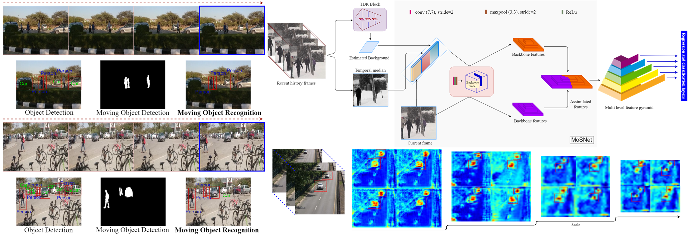

Dr. Murari Mandal
School of Computing
National University of Singapore (NUS)
Address: NCRiPT Lab, I4 Building #04-03
3 Research Link, NUS Singapore, 117602
E-mail: murari@comp.nus.edu.sg , murarimandal.cv@gmail.com
Research Collaborators: Prof. Mohan Kankanhalli, Prof. Jussi Keppo
RESEARCH INTERESTS
• Deep Learning
• Data Valuation
• Image and Video Analytics
• Drone based Scene Analysis: Object Detection, Remote Sensing
RECENT
2021
2021: Awarded PhD Degree!
2020
November 2020: Paper accepted in IEEE Transactions on Image Processing (IF: 9.34)
October 2020: Paper accepted in IEEE Transactions on Intelligent Transportation System (IF: 6.319)
September 2020: Joined National University of Singapore as a Postdoctoral Researcher
August 2020: PhD Thesis Submitted!
July 2020: Paper accepted in ACM Multimedia (ACM MM-2020)
Served as a Reviewer for BMVC-2020 (Reviewed 4 papers)
Lecturer at CSE Department, IIIT Kota, Jan 2020-May 2020
2019
Served as a Reviewer for WACV-2020 (Reviewed 5 papers)
Invited Reviewer for IEEE Transactions on Image Processing (TIP), IEEE Transactions on Industrial Informatics (TII) and IEEE Transactions on Emerging Topics in Computational Intelligence (TETCI)
Oct 2019: Paper accepted in IEEE Signal Processing Letters (Journal, IF:3.2)
Sep 2019: Paper accepted in WACV 2020
June 2019: Paper accepted in IEEE Geoscience and Remote Sensing Letters (Journal: IF:3.5)
May 2019: Paper accepted in CVPR Workshops (AI City Challenge) 2019.
April 2019: Paper accepted in 26th IEEE International Conference on Image Processing (ICIP) 2019 in Taipei, Taiwan.
February 2019: Paper accepted in IET Image Processing (Journal, IF:2.0)
January 2019: Poster accepted at NVIDIA GTC Conference, Silicon Valley, US.
2018
July 2018: Paper accepted in IET Computer Vision (Journal, IF:1.7)
April 2018: Paper accepted in 24th IEEE International Conference on Pattern Recognition (ICPR) 2018.
MotionRec: Deep Unified Framework for Moving Object Recognition

3DFR for Scene Independent Change Detectcion
AutoSteer: 3D feature learning with deep heterogeneous priors for Autonomous Steering

AVDNet: Vehicle Detection from Aerial View

SSSDet: Lightweight Vehicle Detector for UAVs

ANTIC: Change Detection in Videos
Change Detection in Dynamic Background Videos
JOURNALS
4.
Murari Mandal,Manal Shah, Prashant Meena, Sanhita Devi, Santosh Kumar Vipparthi, “AVDNet:
A Small-Sized Vehicle Detection Network for Aerial Visual Data,” IEEE Geoscience and Remote Sensing Letters, vol. 17, no. 3, pp. 494-498, 2020
(IF: 3.833)
CONFERENCES
2. Murari Mandal, Lav Kush Kumar, Mahipal Singh Saran, Santosh Kumar Vipparthi,
"MotionRec: A Unified Deep Framework for Moving Object Recognition,"
IEEE Winter Conference on Applications of Computer Vision (WACV-2020), Snowmass Village, Colorado, US, 2020. (Core - A)
4. Kuldeep Marotirao Biradar, Ayushi Gupta, Murari Mandal , Santosh Kumar Vipparthi
"Challenges in Time-Stamp Aware Anomaly
Detection in Traffic Videos," CVPR Workshops (CVPRW-2019), pp. 13-20, Long Beach, CA, USA, 2019. (Core - B)
5. Shivangi Dwivedi, Murari Mandal, Shekhar Yadav, Santosh Kumar Vipparthi
"3D CNN with Localized Residual Connections for Hyperspectral Image Classification," 4th International Conference on Computer Vision
and Image Processing (CVIP-2019), Jaipur, India, 2019.
AWARDS
• Received IEEE Signal Processing Society (SPS) Travel grant (1000 USD) to present my paper at ICIP-2019 in Taipei, Taiwan.
• Received the International Travel Support (ITS) grant from Science and Engineering Research Board, Department of Science & Technology, Government of India (SERB-DST).
• Awarded a four-year Institute Research Fellowship for pursuing PhD at the Malaviya National Institute of Technology, Jaipur by Ministry of Human Resource Development (MHRD),
Government of India. [Jan 2016 - Jan 2020]
EDUCATION
PhD (Jan 2016 - August 2020)
Vision Intelligence Lab
Computer Science and Engineering
Malaviya National Institute of Technology Jaipur, India
Supervisor: Dr. Santosh Kumar Vipparthi
Postgraduate Degree, M. E. (July 2013 - May 2015)
Computer Science and Engineering
Thapar University, Patiala, India
Undergraduate Degree, B. E. (Hons.) (July 2007 - May 2011)
Computer Science and Information Science
Birla Institute of Technology and Science Pilani (BITS Pilani), Pilani Campus, Rajasthan, India
ABOUT ME
Currently, I am a Post Doctoral researcher in the School of Computing, NUS Singapore where I am working with Prof. Mohan Kankanhalli and Prof. Jussi Keppo in the
N-Cript Lab. I received my PhD from Malaviya National Institute of Technology Jaipur. Previously to that I received my bachelor and masters degree in Computer Science from BITS Pilani (2011) and Thapar University (2015).
Counters